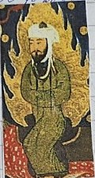
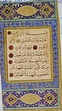
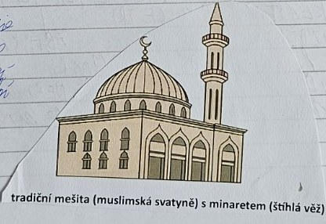
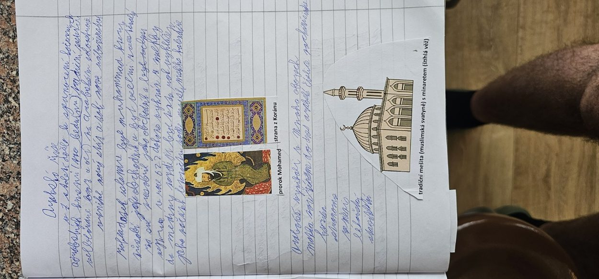

7.–9. století
Arabská říše a islám
V 7. století vzniklo v Arábii nové náboženství, islám. Arabové se za sto let rozšířili od Indu po Španělsko a jejich učenci rozvíjeli matematiku, lékařství i astronomii.
- 622 Hidžra: Mohamed odchází z Mekky do Medíny, počátek muslimského letopočtu
- 632 Smrt Mohameda; muslimy vedou chalífové
- 732 Karel Martel poráží Araby u Poitiersi v tématu Franská říše
- 786–809 Chalífa Harún ar-Rašíd; slon pro Karla Velikéhoi v tématu Franská říše
Arabský poloostrov a Mohamed


Arabové žili na Arabském poloostrově, kde byly obchodní osady, města i kočovné kmeny. Významným střediskem byla Mekka. V 7. století zde vznikl islám, monoteistické náboženství, jehož ústřední prorockou osobností je Mohamed (Muhammad). Muslimové věří v jediného Boha (arabsky Alláh) a jejich posvátnou knihou je Korán.
Roku 622 Mohamed odešel z Mekky do Medíny. Této události se říká hidžra a od jejího roku se odvozuje muslimský letopočet. Mohamed zemřel roku 632. Po něm vedli muslimskou obec chalífové.
Arabská expanze
V 7. a 8. století Arabové a další muslimská vojska ovládli rozsáhlá území Blízkého východu, severní Afriky i části Pyrenejského poloostrova. Roku 732 franský vojevůdce Karel Martel porazil muslimské vojsko v bitvě u Tours/Poitiers. Neznamenalo to konec všech muslimských výbojů, ale šlo o významnou franskou výhru.
Kultura a vzdělanost

Arabský a širší islámský svět rozvíjel matematiku, lékařství, astronomii, zeměpis a obchod. Významné bylo předávání a rozvíjení starověkých znalostí. Muslimové se modlí v mešitě; minaret je věž, z níž se tradičně svolává k modlitbě.
Harún ar-Rašíd
Harún ar-Rašíd byl abbásovský chalífa (vládl 786–809). Udržoval diplomatické styky s Karlem Velikým a poslal mu slona jménem Abú al-Abbás. Vystupuje také v příbězích spojených se sbírkou Tisíc a jedna noc, kterou rámcově vypráví Šeherezáda.
Paměťový obraz
- Karavana v poušti: Mohamed, Mekka, islám, Korán, rok 622, Medína.
- Slon u Karla Velikého: Harún ar-Rašíd, diplomacie, Tisíc a jedna noc.
Vyzkoušej se
Odpověz nahlas, teprve pak otevři odpověď. Procvičit náhodně
Kdo byl Mohamed?
Prorok islámu.
Jaká je posvátná kniha islámu?
Korán.
Co znamená hidžra a kdy se odehrála?
Odchod Mohameda z Mekky do Medíny roku 622.
Kdo vedl muslimskou obec po Mohamedovi?
Chalífové.
Co je minaret?
Věž u mešity, z níž se svolává k modlitbě.
Kdo porazil Araby u Poitiers roku 732?
Franský majordomus Karel Martel.
Který chalífa poslal slona Karlu Velikému?
Harún ar-Rašíd.
Kdo vypráví příběhy Tisíce a jedné noci?
Šeherezáda.
Zápis ze sešitu
Fotky stránek sešitu
